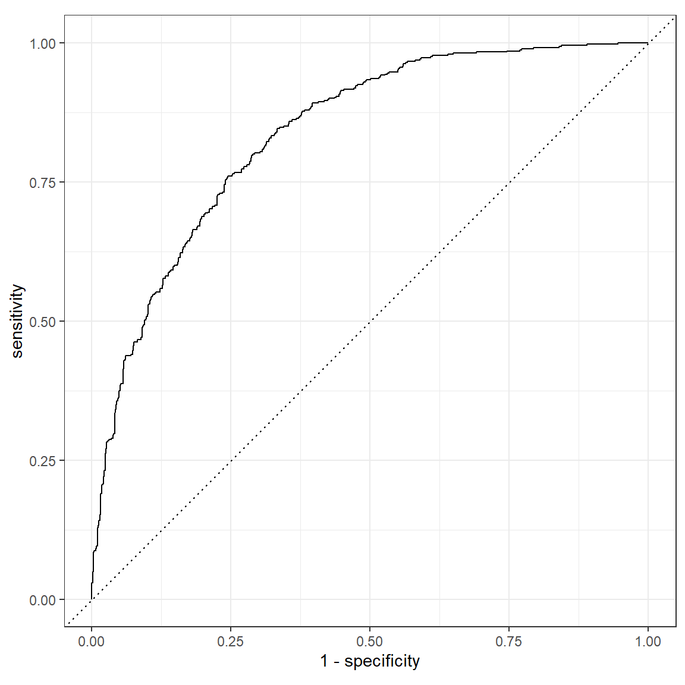

Fitting
|
Applied Machine Learning with R The R Bootcamp @ AMLD |

|

adapted from xkcd.com
Overview
In this practical, you’ll practice the basics of fitting and exploring regression models in R using the tidymodels package.
By the end of this practical you will know how to:
- Fit a regression model to training data.
- Explore your fit object with generic functions.
- Evaluate the model’s fitting performance using accuracy measures such as RMSE and MAE.
- Explore the effects of adding additional features.
Tasks
A - Setup
- Open your
TheRBootcampR project. It should already have the folders1_Dataand2_Code. Make sure that the data file(s) listed in theDatasetssection are in your1_Datafolder
# Done!- Open a new R script and save it as a new file called
Fitting_practical.Rin the2_Codefolder.
# Done!- Using
library()load the set of packages for this practical listed in the packages section above.
# Load packages necessary for this script
library(tidyverse)
library(tidymodels)
tidymodels_prefer() # to resolve common conflicts- For this practical, we’ll use a dataset of apartments that were added to Airbnb in 2018 and are located in Berlin. The data is stored in
airbnb.csv. Using the following template, load the dataset into R asairbnb:
# Load in airbnb.csv data as airbnb
airbnb <- read_csv(file = "1_Data/airbnb.csv")- Take a look at the first few rows of the dataset by printing it to the console.
airbnb# A tibble: 1,191 x 23
price accommodates bedrooms bathrooms cleaning_fee availability_90_~ district
<dbl> <dbl> <dbl> <dbl> <dbl> <dbl> <chr>
1 99 3 1 2 30 3 Pankow
2 61 4 1 1 35 0 Mitte
3 50 2 2 0.5 0 0 Mitte
4 30 2 1 1.5 25 31 Mitte
5 60 2 1 1 40 87 Tempelh~
6 45 2 1 1.5 10 0 Friedri~
7 32 2 0 1 0 14 Lichten~
8 62 6 2 1 30 76 Pankow
9 50 2 1 1 0 53 Charlot~
10 60 2 1 1 0 16 Charlot~
# ... with 1,181 more rows, and 16 more variables: host_respons_time <chr>,
# host_response_rate <dbl>, host_superhost <lgl>, host_listings_count <dbl>,
# review_scores_accuracy <dbl>, review_scores_cleanliness <dbl>,
# review_scores_checkin <dbl>, review_scores_communication <dbl>,
# review_scores_location <dbl>, review_scores_value <dbl>, kitchen <chr>,
# tv <chr>, coffe_machine <chr>, dishwasher <chr>, terrace <chr>,
# bathtub <chr>- Print the numbers of rows and columns using the
dim()function.
# Print number of rows and columns of airbnb
dim(XXX)# Print number of rows and columns of airbnb
dim(airbnb)[1] 1191 23- Open the dataset in a new window using
View(). How does it look?
View(XXX)- Familiarize yourself with the names of the dataset by looking at the feature names using
names().
# Print column names of airbnb
names(XXX)# Print column names of airbnb
names(airbnb) [1] "price" "accommodates"
[3] "bedrooms" "bathrooms"
[5] "cleaning_fee" "availability_90_days"
[7] "district" "host_respons_time"
[9] "host_response_rate" "host_superhost"
[11] "host_listings_count" "review_scores_accuracy"
[13] "review_scores_cleanliness" "review_scores_checkin"
[15] "review_scores_communication" "review_scores_location"
[17] "review_scores_value" "kitchen"
[19] "tv" "coffe_machine"
[21] "dishwasher" "terrace"
[23] "bathtub" B - Set up the recipe
- By specifying a
recipe, we specify (a) what to predict, (b) how to predict it (the features), (c) how to prepare our data. Create your first recipe calledairbnb_recipe, by adding a formula to specify that we want to predictpricewith the number of people it can accommodate (accommodates):
- set the formula to
price ~ accommodates - set the data to
airbnb
# create basic recipe
airbnb_recipe <- recipe(XXX ~ XXX, data = XXX)# create basic recipe
airbnb_recipe <- recipe(price ~ accommodates, data = airbnb)- Print the created recipe.
airbnb_recipeData Recipe
Inputs:
role #variables
outcome 1
predictor 1C - Set up the model
- In this practical we will use a linear regression to predict the price of airbnbs. To be able to do so in
tidymodels, we first have to set up our model. We do this by specifying (a) the model type, (b) the enginge we want to use, and (c) whether we are working on a regression or a classification problem. We will do this step-by-step. To perform step (a), call thelinear_reg()function and assign it the namelm_model.
# set up our model
lm_model <-
XXX()# set up our model
lm_model <-
linear_reg()- Next, we have to specify which engine to use. Here we will use the
statspackage’s engine. To do so, add a pipe (%>%) to the code you specified above, and add theset_engine(XXX)function, with the engine"lm".
# set up the engine
lm_model <-
linear_reg() %>%
XXX(XXX)# set up the engine
lm_model <-
linear_reg() %>%
set_engine("lm")- To see which engines are available for a given model type, use
show_engines("MODEL_TYPE"). Check which other engines would be available with the model typelinear_reg.
show_engines("linear_reg")# A tibble: 5 x 2
engine mode
<chr> <chr>
1 lm regression
2 glmnet regression
3 stan regression
4 spark regression
5 keras regression- The third and last step is to specify the problem type, which in
tidymodelsis referred to as the problemmode. To do so, add yet another pipe to the definition oflm_modeland call theset_mode()function. Pass"regression"as argument to this function.
# set up the problem mode
lm_model <-
linear_reg() %>%
set_engine("lm") %>%
XXX(XXX)# set up the problem mode
lm_model <-
linear_reg() %>%
set_engine("lm") %>%
set_mode("regression")- Take a look at your model by printing
lm_model.
# print lm_model
lm_modelLinear Regression Model Specification (regression)
Computational engine: lm - Using
translate()we can view the function that will be called to fit our model. Arguments not yet specified (and thus, at this point, unknown), will be shown asmissing_arg(). Usetranslate()and passlm_modelas argument.
# view the underlying function used to fit the model
translate(lm_model)Linear Regression Model Specification (regression)
Computational engine: lm
Model fit template:
stats::lm(formula = missing_arg(), data = missing_arg(), weights = missing_arg())D - Fit a regression model
- Now we can finally specify our model
workflowin which we bring the model specification and recipe together, to then fit our model. To do so
- create an object called
lm_workflow. - call the
workflow()function, to initiate the workflow. - add the
airbnb_recipeusing theadd_recipe()function. - add the
lm_modelmodel specification using theadd_model()function.
# lm workflow
lm_workflow <-
XXX() %>%
XXX(XXX) %>%
XXX(XXX)# lm workflow
lm_workflow <-
workflow() %>%
add_recipe(airbnb_recipe) %>%
add_model(lm_model)- Print the
lm_workflowobject to view a summary of how the modeling will be done.
lm_workflow== Workflow ====================================================================
Preprocessor: Recipe
Model: linear_reg()
-- Preprocessor ----------------------------------------------------------------
0 Recipe Steps
-- Model -----------------------------------------------------------------------
Linear Regression Model Specification (regression)
Computational engine: lm - Now it’s time to actually fit the model with the
fit()function. Pass thelm_workflowinto the fit function and save it asprice_lm. Also we have to provide the data to the fit function, by specifying thedataargument. Setdata = airbnb.
# Fit the regression model
price_lm <-
XXX %>%
XXX(XXX = XXX)# Fit the regression model
price_lm <-
lm_workflow %>%
fit(airbnb)- Print the
price_lmobject.
price_lm== Workflow [trained] ==========================================================
Preprocessor: Recipe
Model: linear_reg()
-- Preprocessor ----------------------------------------------------------------
0 Recipe Steps
-- Model -----------------------------------------------------------------------
Call:
stats::lm(formula = ..y ~ ., data = data)
Coefficients:
(Intercept) accommodates
-13.5 27.6 - While this showed us the two parameters, the output is not very informative. To obtain a more detailed output, you can use the
tidy()function on theprice_lmobject.
# Fit the regression model
tidy(price_lm)# A tibble: 2 x 5
term estimate std.error statistic p.value
<chr> <dbl> <dbl> <dbl> <dbl>
1 (Intercept) -13.5 4.04 -3.34 8.60e- 4
2 accommodates 27.6 1.12 24.6 1.15e-108- Take a look at the parameter values. How do you interpret these values?
# For every additional person a flat accommodates, the price of an airbnb is
# predicted to rise by 18$s.E - Evaluate accuracy
- Now it’s time to evaluate the model’s fitted values! Use the
predict()function to extract the model predictions. This returns them as a column named.pred. Then, usingbind_cols()add the true values.
# generate predictions
lm_pred <-
XXX %>%
predict(new_data = airbnb) %>%
bind_cols(airbnb %>% select(price))# generate predictions
lm_pred <-
price_lm %>%
predict(new_data = airbnb) %>%
bind_cols(airbnb %>% select(price))- Take a look at the
lm_predobject and make sure you understand the meaning of these variables.
# The first variable, .pred, was created in the call to the predict() function.
# It contains the predicted prices. The second variable, price, contains the
# actual prices from our dataset.- Using the following code, plot the fitted against the true value, to judge how well our model performed. What do you think, is this performance good or bad?
# use the lm_pred object to generate the plot
ggplot(lm_pred, aes(x = .pred, y = price)) +
# Create a diagonal line:
geom_abline(lty = 2) +
# Add data points:
geom_point(alpha = 0.5) +
labs(title = "Regression: One Feature",
subtitle = "Line indicates perfect performance",
x = "Predicted Airbnb Prices in $",
y = "True Airbnb Prices in $") +
# Scale and size the x- and y-axis uniformly:
coord_obs_pred()# The points do not fall on the line, which indicates
# a poor model fit.- Let’s quantify our model’s fitting results. In a regression-problem setting, the
metrics()function returns the MAE, RMSE, and the \(R^2\) of a model. Compute these indices by passing thepricevariable astruthand the.predvariable asestimateto themetrics()function.
# evaluate performance
XXX(lm_pred, truth = XXX, estimate = XXX)# evaluate performance
metrics(lm_pred, truth = price, estimate = .pred)# A tibble: 3 x 3
.metric .estimator .estimate
<chr> <chr> <dbl>
1 rmse standard 73.7
2 rsq standard 0.338
3 mae standard 29.5 - How do you interpret these values?
# On average, the model commits a prediction error of 34.9 when predicting the
# price of an airbnb. The large difference between the MAE and the RMSE indicates
# That the prediction errors vary very strongly. This is also apparent in the
# plot we created before.
# The R^2 value is 0.0458, that is, only about 5% of the variation in the data
# can be captured by our model.F - Add more features
So far we have only used one feature (accommodates), to predict price. Let’s try again, but now we’ll use a total of four features:
accommodates- the number of people the airbnb accommodates.bedrooms- number of bedrooms.bathrooms- number of bathrooms.district- location of the airbnb.
- To do this, we will have to update our
lm_recipe. Specifically, we want to add the three new features to the formula. Update the recipe from B1, by extending the formula.
# updated recipe
airbnb_recipe <-
recipe(XXX ~ XXX + XXX + XXX + XXX, data = XXX)# updated recipe
airbnb_recipe <-
recipe(price ~ accommodates + bedrooms + bathrooms + district,
data = airbnb)- Because we now have a categorical predictor (
district), we also have to update the recipe by adding a pre-processing step that ensures that categorical predictors are dummy-coded. Add a pipe (%>%) to the recipe definition of the previous task and callstep_dummy(all_nominal_predictors())to define this pre-processing step.
# updated recipe
airbnb_recipe <-
recipe(price ~ accommodates + bedrooms + bathrooms + district,
data = airbnb) %>%
XXX(XXX())# updated recipe
airbnb_recipe <-
recipe(price ~ accommodates + bedrooms + bathrooms + district,
data = airbnb) %>%
step_dummy(all_nominal_predictors())- Update the recipe in the workflow using the
update_recipe()function. Pass the newairbnb_recipetoupdate_recipe().
# update lm workflow with new recipe
lm_workflow <-
lm_workflow %>%
XXX(XXX) # update lm workflow with new recipe
lm_workflow <-
lm_workflow %>%
update_recipe(airbnb_recipe)- Print the
lm_workflowobject to view a summary of how the modeling will be done. The recipe should now be updated, which you can see by the new section Preprocessor.
lm_workflow== Workflow ====================================================================
Preprocessor: Recipe
Model: linear_reg()
-- Preprocessor ----------------------------------------------------------------
1 Recipe Step
* step_dummy()
-- Model -----------------------------------------------------------------------
Linear Regression Model Specification (regression)
Computational engine: lm - Refit the model as you have done above, and call it
price_lm.
# Fit the regression model
price_lm <-
lm_workflow %>%
fit(airbnb)- Using the
tidy()function on theprice_lmobject, take a look at the parameter estimates.
# Fit the regression model
tidy(price_lm)# A tibble: 15 x 5
term estimate std.error statistic p.value
<chr> <dbl> <dbl> <dbl> <dbl>
1 (Intercept) -46.2 10.8 -4.27 2.15e- 5
2 accommodates 22.3 1.57 14.2 3.22e-42
3 bedrooms 13.7 4.39 3.12 1.86e- 3
4 bathrooms 23.5 7.23 3.26 1.16e- 3
5 district_Friedrichshain.Kreuzberg 3.42 9.13 0.374 7.08e- 1
6 district_Lichtenberg -6.44 14.7 -0.438 6.61e- 1
7 district_Marzahn...Hellersdorf -19.8 30.8 -0.641 5.22e- 1
8 district_Mitte 22.6 9.26 2.44 1.48e- 2
9 district_Neukölln 0.0925 10.0 0.00923 9.93e- 1
10 district_Pankow 7.52 9.44 0.797 4.26e- 1
11 district_Reinickendorf -17.9 18.5 -0.965 3.35e- 1
12 district_Spandau -29.6 24.4 -1.22 2.24e- 1
13 district_Steglitz...Zehlendorf -0.446 16.4 -0.0272 9.78e- 1
14 district_Tempelhof...Schöneberg 8.90 10.9 0.814 4.16e- 1
15 district_Treptow...Köpenick -11.1 16.9 -0.658 5.11e- 1- Using the
predict()function, to extract the model predictions and bind them together with the true values usingbind_cols().
# generate predictions
lm_pred <-
XXX %>%
XXX(XXX) %>%
XXX(airbnb %>% select(price))# generate predictions
lm_pred <-
price_lm %>%
predict(new_data = airbnb) %>%
bind_cols(airbnb %>% select(price))- Using the following code, plot the fitted against the true value, to judge how well our model performed. What do you think, is this performance good or bad? And how does it compare to the model with only one feature we fitted before?
# use the lm_pred object to generate the plot
ggplot(lm_pred, aes(x = .pred, y = price)) +
# Create a diagonal line:
geom_abline(lty = 2) +
# Add data points:
geom_point(alpha = 0.5) +
labs(title = "Regression: Four Features",
subtitle = "Line indicates perfect performance",
x = "Predicted Airbnb Prices in $",
y = "True Airbnb Prices in $") +
# Scale and size the x- and y-axis uniformly:
coord_obs_pred()# The model seems to do a little better than before, but the points still do not
# really fall on the line, which indicates a poor model fit.- Using the
metrics()function, evaluate the model performance. Pass it thepricevariable astruthand the.predvariable asestimate.
# evaluate performance
XXX(lm_pred, truth = XXX, estimate = XXX)# evaluate performance
metrics(lm_pred, truth = price, estimate = .pred)# A tibble: 3 x 3
.metric .estimator .estimate
<chr> <chr> <dbl>
1 rmse standard 72.2
2 rsq standard 0.365
3 mae standard 28.7 - How do you interpret these values? How do they compare to the ones you obtained previously?
# On average, the model commits a prediction error of 35.7 when predicting the
# price of an airbnb. This is even larger than with only the one predictor.
# The large difference between the MAE and the RMSE indicates
# that the prediction errors vary very strongly. This is also apparent in the
# plot we created before.
# The R^2 value is 0.124, that is, about 12% of the variation in the data
# can be captured by our model, which is more than twice of what the model with
# only one feature explained.G - Use all features
Alright, now it’s time to use all features available!
- Update the formula of the
lm_recipeand set it toprice ~ .The.indicates that all available variables that are not outcomes should be used as features.
# updated recipe
airbnb_recipe <-
recipe(XXX ~ XXX, data = XXX) %>%
step_dummy(all_nominal_predictors())# updated recipe
airbnb_recipe <-
recipe(price ~ ., data = airbnb) %>%
step_dummy(all_nominal_predictors())- Update the recipe in the workflow using the
update_recipe()function. Pass the newairbnb_recipetoupdate_recipe().
# update lm workflow with new recipe
lm_workflow <-
lm_workflow %>%
XXX(XXX) # update lm workflow with new recipe
lm_workflow <-
lm_workflow %>%
update_recipe(airbnb_recipe)- Refit the model as you have done above, and call it
price_lm.
# Fit the regression model
price_lm <-
lm_workflow %>%
fit(airbnb)- Using the
tidy()function on theprice_lmobject, take a look at the parameter estimates.
# Fit the regression model
tidy(price_lm)# A tibble: 35 x 5
term estimate std.error statistic p.value
<chr> <dbl> <dbl> <dbl> <dbl>
1 (Intercept) -149. 68.1 -2.19 2.86e- 2
2 accommodates 23.3 1.78 13.1 9.41e-37
3 bedrooms 13.0 4.55 2.86 4.34e- 3
4 bathrooms 24.0 7.36 3.26 1.15e- 3
5 cleaning_fee -0.241 0.0915 -2.64 8.46e- 3
6 availability_90_days -0.0400 0.0741 -0.540 5.89e- 1
7 host_response_rate -0.160 0.261 -0.613 5.40e- 1
8 host_superhostTRUE 10.7 4.95 2.17 3.05e- 2
9 host_listings_count 0.276 0.551 0.501 6.16e- 1
10 review_scores_accuracy 8.43 5.82 1.45 1.48e- 1
# ... with 25 more rows- Using the
predict()function, to extract the model predictions and bind them together with the true values usingbind_cols().
# generate predictions
lm_pred <-
XXX %>%
XXX(XXX) %>%
XXX(airbnb %>% select(price))# generate predictions
lm_pred <-
price_lm %>%
predict(new_data = airbnb) %>%
bind_cols(airbnb %>% select(price))- Using the following code, plot the fitted against the true value, to judge how well our model performed. What do you think, is this performance good or bad? And how does it compare to the model with only one feature we fitted before?
# use the lm_pred object to generate the plot
ggplot(lm_pred, aes(x = .pred, y = price)) +
# Create a diagonal line:
geom_abline(lty = 2) +
# Add data points:
geom_point(alpha = 0.5) +
labs(title = "Regression: All Features",
subtitle = "Line indicates perfect performance",
x = "Predicted Airbnb Prices in $",
y = "True Airbnb Prices in $") +
# Scale and size the x- and y-axis uniformly:
coord_obs_pred()# Even with all predictors, the model seems to have some issues.- Using the
metricsfunction, evaluate the model performance. Pass it thepricevariable astruthand the.predvariable asestimate.
# evaluate performance
XXX(lm_pred, truth = XXX, estimate = XXX)# evaluate performance
metrics(lm_pred, truth = price, estimate = .pred)# A tibble: 3 x 3
.metric .estimator .estimate
<chr> <chr> <dbl>
1 rmse standard 71.1
2 rsq standard 0.385
3 mae standard 29.7 - How do you interpret these values? How do they compare to the ones you obtained previously?
# On average, the model commits a prediction error of 37.9 when predicting the
# price of an airbnb. This is again larger than with only the one predictor.
# The large difference between the MAE and the RMSE indicates
# that the prediction errors vary very strongly. This is also apparent in the
# plot we created before.
# The R^2 value is 0.196, that is, about 20% of the variation in the data
# can be captured by our model.Classification
H - Make sure your criterion is a factor!
Now it’s time to do a classification task! Recall that in a classification task, we are predicting a category, not a continuous number. In this task, we’ll predict whether or not a host is a superhost (these are experienced hosts that meet a set of criteria). Whether or not a host is a superhost is stored in the variable host_superhost.
- In order to do classification training, we have to ensure that the criterion is coded as a
factor. To test whether it is coded as a factor, you can look at itsclassas follows.
# Look at the class of the variable host_superhost, should be a factor!
class(airbnb$host_superhost)[1] "logical"- The
host_superhostvariable is of classlogical. Therefore, we have to change it tofactor. Important note: In binary classification tasks, the first factor level will be chosen as positive. We therefore explicitly specify, thatTRUEbe the first level.
# Recode host_superhost to be a factor with TRUE as first level
airbnb <-
airbnb %>%
mutate(host_superhost = factor(host_superhost, levels = c(TRUE, FALSE)))- Check again, whether
host_superhostis now a factor, and check whether the order of the levels is as intended usinglevels()(the order should be"TRUE", "FALSE").
XXX(airbnb$host_superhost)
XXX(airbnb$host_superhost)class(airbnb$host_superhost)[1] "factor"levels(airbnb$host_superhost)[1] "TRUE" "FALSE"I - Fit a classification model
- Given that we now want to predict a new variable (
host_superhost) with a new model (a logistic regression), we need to update both our model and our recipe. Specify the new recipe. Specifically…
- set the formula to
host_superhost ~ ., to use all possible features - add
step_dummy(all_nominal_predictors())to pre-process nominal features - call the new object
logistic_recipe
# create new recipe
XXX <-
XXX(XXX, data = XXX) %>%
XXX(XXX())# create new recipe
logistic_recipe <-
recipe(host_superhost ~ ., data = airbnb) %>%
step_dummy(all_nominal_predictors())- Print the new recipe.
logistic_recipeData Recipe
Inputs:
role #variables
outcome 1
predictor 22
Operations:
Dummy variables from all_nominal_predictors()- Create a new model called
logistic_model, with the model typelogistic_reg, the engine"glm", and mode"classification".
# create a logistic regression model
XXX_model <-
XXX() %>%
set_XXX(XXX) %>%
set_XXX(XXX)# create a logistic regression model
logistic_model <-
logistic_reg() %>%
set_engine("glm") %>%
set_mode("classification")- Print the
logistic_modelobject. Usingtranslate(), check out the underlying function that will be used to fit the model.
logistic_modelLogistic Regression Model Specification (classification)
Computational engine: glm translate(logistic_model)Logistic Regression Model Specification (classification)
Computational engine: glm
Model fit template:
stats::glm(formula = missing_arg(), data = missing_arg(), weights = missing_arg(),
family = stats::binomial)- Create a new workflow called
logistic_workflow, where you add thelogistic_modeland thelogistic_recipetogether.
# create logistic_workflow
logistic_workflow <-
workflow() %>%
add_recipe(logistic_recipe) %>%
add_model(logistic_model)- Print and check out the new workflow.
logistic_workflow== Workflow ====================================================================
Preprocessor: Recipe
Model: logistic_reg()
-- Preprocessor ----------------------------------------------------------------
1 Recipe Step
* step_dummy()
-- Model -----------------------------------------------------------------------
Logistic Regression Model Specification (classification)
Computational engine: glm - Fit the model using
fit(). Save the result as
# Fit the logistic regression model
superhost_glm <-
logistic_workflow %>%
fit(airbnb)J - Assess model performance
- Now it’s time to evaluate the classification models’ performance. We can again use the
metrics()function to do so. First, we again create a dataset containing the predicted and true values. This time, we call thepredict()function twice: once to obtain the predicted classes, and once to obtain the probabilities, with which the classes are predicted.
# Get fitted values from the Private_glm object
logistic_pred <-
predict(superhost_glm, airbnb, type = "prob") %>%
bind_cols(predict(superhost_glm, airbnb)) %>%
bind_cols(airbnb %>% select(host_superhost))# Get fitted values from the Private_glm object
logistic_pred <-
predict(superhost_glm, airbnb, type = "prob") %>%
bind_cols(predict(superhost_glm, airbnb)) %>%
bind_cols(airbnb %>% select(host_superhost))- Take a look at the
logistic_predobject and make sure you understand what the variables mean.
# The first two variables contain the predicted class probabilities and were
# created from the first call to predict(), where type = "prob" was used.
# The third variable, .pred_class, contains the predicted class. If the .pred_TRUE
# variable in a given row was >=.5, this will be TRUE, otherwise it will be FALSE.
# Finally, the last variable, host_superhost, contains the true values.- Now, get the confusion matrix using the
conf_mat()function and passing it thehost_superhostvariable astruth, and th.pred_classvariable asestimate. Just by looking at the confusion matrix, do you think the model is doing well?
XXX(logistic_pred, truth = XXX, estimate = XXX)conf_mat(logistic_pred, truth = host_superhost, estimate = .pred_class) Truth
Prediction TRUE FALSE
TRUE 337 152
FALSE 143 559- Let’s look at different performance metrics. Use the
metrics()function, with exactly the same arguments as you used in the call toconf_mat()before, to obtain the accuracy and the kappa statistic (a chance-corrected measure of agreement between model prediction and true value).
metrics(logistic_pred, truth = host_superhost, estimate = .pred_class)# A tibble: 2 x 3
.metric .estimator .estimate
<chr> <chr> <dbl>
1 accuracy binary 0.752
2 kap binary 0.487- How do you interpret these values? Do you think the model performs well?
logistic_pred %>%
pull(host_superhost) %>%
table() %>%
prop.table() %>%
round(2).
TRUE FALSE
0.4 0.6 # Just by predicting always FALSE, the model could reach an accuracy of 68%.
# By using all the features available, the model can do about 10 percentage points
# better than that. According to some, completely arbitrary, guidelines, the
# kappa value of .48 can be considered moderate or fair to good.
# Whether such values are acceptable depends on the use case.- The metrics we just looked at are based on the class predictions. We can also obtain additional metrics based on the predicted probabilities of class membership. Use the same code as in the last task, but add the name of the column containing the predictied positive class probability (
.pred_TRUE) as an unnamed, fourth argument:
XXX(logistic_pred, truth = XXX, estimate = XXX, XXX)metrics(logistic_pred, truth = host_superhost, estimate = .pred_class, .pred_TRUE)# A tibble: 4 x 3
.metric .estimator .estimate
<chr> <chr> <dbl>
1 accuracy binary 0.752
2 kap binary 0.487
3 mn_log_loss binary 0.485
4 roc_auc binary 0.837- What does the
roc_aucvalue indicate?
# It indicates the area under the curve (AUC) of the receiver operator
# characteristic (ROC) curve. A value of 1 would be perfect, indicating that both
# sensitivity and specificity simultaneously take perfect values.- To plot the ROC curve, we can use the
roc_curve()function, to create sensitivity and specificity values of different cut-offs, and pass this into theautoplot()function, to plot the curve. Add thehost_superhostcolumn astruth, and the.pred_TRUEcolumn as third, unnamed argument, to theroc_curve()function and plot the curve.
XXX(logistic_pred, truth = XXX, XXX) %>%
autoplot()roc_curve(logistic_pred, truth = host_superhost, .pred_TRUE) %>%
autoplot()
Examples
# Fitting and evaluating a regression model ------------------------------------
# Step 0: Load packages---------------------------------------------------------
library(tidyverse) # Load tidyverse for dplyr and tidyr
library(tidymodels) # For ML mastery
tidymodels_prefer() # To resolve common conflicts
# Step 1: Load and Clean, and Explore Training data ----------------------------
# I'll use the mpg dataset from the dplyr package in this example
data_train <- read_csv("1_Data/mpg_train.csv")
# Explore training data
data_train # Print the dataset
View(data_train) # Open in a new spreadsheet-like window
dim(data_train) # Print dimensions
names(data_train) # Print the names
# Step 2: Define recipe --------------------------------------------------------
# The recipe defines what to predict with what, and how to pre-process the data
lm_recipe <-
recipe(hwy ~ year + cyl + displ + trans, # Specify formula
data = data_train) %>% # Specify the data
step_dummy(all_nominal_predictors()) # Dummy code all categorical predictors
# Step 3: Define model ---------------------------------------------------------
# The model definition defines what kind of model we want to use and how to
# fit it
lm_model <-
linear_reg() %>% # Specify model type
set_engine("lm") %>% # Specify engine (often package name) to use
set_mode("regression") # Specify whether it's a regressio or classification
# problem.
# Step 4: Define workflow ------------------------------------------------------
# The workflow combines model and recipe, so that we can fit the model
lm_workflow <-
workflow() %>% # Initialize workflow
add_model(lm_model) %>% # Add the model to the workflow
add_recipe(lm_recipe) # Add the recipe to the workflow
# Step 5: Fit the model --------------------------------------------------------
hwy_lm <-
lm_workflow %>% # Use the specified workflow
fit(data_train) # Fit the model on the specified data
tidy(hwy_lm) # Look at summary information
# Step 6: Assess fit -----------------------------------------------------------
# Save model predictions and observed values
lm_fitted <-
hwy_lm %>% # Model from which to extract predictions
predict(data_train) %>% # Obtain predictions, based on entered data (in this
# case, these predictions are not out-of-sample)
bind_cols(data_train %>% select(hwy)) # Extract observed/true values
# Obtain performance metrics
metrics(lm_fitted, truth = hwy, estimate = .pred)
# Step 7: Visualize Accuracy ---------------------------------------------------
# use the lm_fitted object to generate the plot
ggplot(lm_fitted, aes(x = .pred, y = hwy)) +
# Create a diagonal line:
geom_abline(lty = 2) +
# Add data points:
geom_point(alpha = 0.5) +
labs(title = "Regression: Four Features",
subtitle = "Line indicates perfect performance",
x = "Predicted hwy",
y = "True hwy") +
# Scale and size the x- and y-axis uniformly:
coord_obs_pred()Datasets
The dataset contains data of the 1191 apartments that were added on Airbnb for the Berlin area in the year 2018.
| File | Rows | Columns |
|---|---|---|
| airbnb.csv | 1191 | 23 |
Variable description of airbnb
| Name | Description |
|---|---|
| price | Price per night (in $s) |
| accommodates | Number of people the airbnb accommodates |
| bedrooms | Number of bedrooms |
| bathrooms | Number of bathrooms |
| cleaning_fee | Amount of cleaning fee (in $s) |
| availability_90_days | How many of the following 90 days the airbnb is available |
| district | The district the Airbnb is located in |
| host_respons_time | Host average response time |
| host_response_rate | Host response rate |
| host_superhost | Whether host is a superhost TRUE/FALSE |
| host_listings_count | Number of listings the host has |
| review_scores_accuracy | Accuracy of information rating [0, 10] |
| review_scores_cleanliness | Cleanliness rating [0, 10] |
| review_scores_checkin | Check in rating [0, 10] |
| review_scores_communication | Communication rating [0, 10] |
| review_scores_location | Location rating [0, 10] |
| review_scores_value | Value rating [0, 10] |
| kitchen | Kitchen available TRUE/FALSE |
| tv | TV available TRUE/FALSE |
| coffe_machine | Coffee machine available TRUE/FALSE |
| dishwasher | Dishwasher available TRUE/FALSE |
| terrace | Terrace/balcony available TRUE/FALSE |
| bathtub | Bathtub available TRUE/FALSE |
Functions
Packages
| Package | Installation |
|---|---|
tidyverse |
install.packages("tidyverse") |
tidymodels |
install.packages("tidymodels") |
Functions
| Function | Package | Description |
|---|---|---|
read_csv() |
tidyverse |
Read in data |
mutate() |
tidyverse |
Manipulate or create columns |
bind_cols() |
tidyverse |
Bind columns together and return a tibble |
linear_reg()/logistic_reg() |
tidymodels |
Initialize linear/logistic regression model |
set_engine() |
tidymodels |
Specify which engine to use for the modeling (e.g., “lm” to use stats::lm(), or “stan” to use rstanarm::stan_lm()) |
set_mode() |
tidymodels |
Specify whether it’s a regression or classification problem |
recipe() |
tidymodels |
Initialize recipe |
step_dummy() |
tidymodels |
pre-process data into dummy variables |
workflow() |
tidymodels |
Initialize workflow |
add_recipe() |
tidymodels |
Add recipe to workflow |
update_recipe() |
tidymodels |
Update workflow with a new recipe |
add_model() |
tidymodels |
Add model to workflow |
fit() |
tidymodels |
Fit model |
tidy() |
tidymodels |
Show model parameters |
predict() |
tidymodels |
Create model predictions based on specified data |
metrics() |
tidymodels |
Evaluate model performance |
conf_mat() |
tidymodels |
Create confusion matrix |
roc_curve() |
tidymodels |
Calculate sensitivity and specificity with different thresholds for ROC-curve |
autoplot() |
tidymodels |
Plot methods for different objects such as those created from roc_curve() to plot the ROC-curve |
Resources
- tidymodels webpage: Can be used as cheat sheet. Also has some tutorials.
- The, not yet completed, book Tidymodeling with R: More detailed introduction into the
tidymodelsframework.